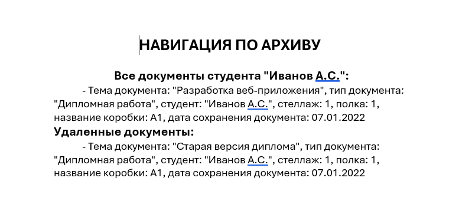
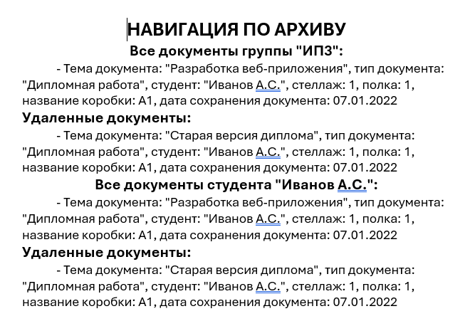

Функция «- все документы выбранного студента» позволяет одним действием добавить в навигационный файл все документы конкретного студента — как обычные, так и удалённые.

Рис. 1. Пункт «- все документы выбранного студента» в подменю навигации
Где доступна эта функция
Пункт меню «- все документы выбранного студента» становится доступным (активным) только в разделе:
— Студенты (раздел 2.2.1)
Порядок действий
1. Перейдите в раздел «Студенты» через главное меню («Студенты → Студенты»).
2. Выделите строку с нужным студентом (один клик по любой ячейке).
3. В главном меню выберите «Печати → Составление файла навигации по архиву → - все документы выбранного студента».
Какие документы добавляются
При выборе этого пункта программа автоматически находит и добавляет в навигационный файл:
— Все обычные документы студента из раздела «Документы работ».
— Все удалённые документы студента из раздела «Удалённые документы».
Пример
Если у студента Иванова И.И. есть:
— 2 курсовых работы (обычные)
— 1 дипломная работа (обычная)
— 1 отчёт по практике (удалённый, срок хранения истёк)
После использования функции «- все документы выбранного студента» в навигационный файл будут добавлены все 4 документа. В итоговом документе они будут перечислены с указанием места хранения (стеллаж, полка, коробка) и отметкой о статусе (обычный/удалённый).

Рис. 2. Все документы студента в сформированном навигационном файле
Особенности добавления
— Если у студента нет документов, функция всё равно выполнится, но в навигационный файл ничего не добавится. В статусной строке появится соответствующее уведомление.
— Можно добавить документы нескольких студентов — просто повторите процедуру для каждого из них.
— Добавленные документы студента можно комбинировать с отдельными документами, добавленными через пункт «Добавить выбранный документ».

Рис. 3. Комбинирование разных типов добавления